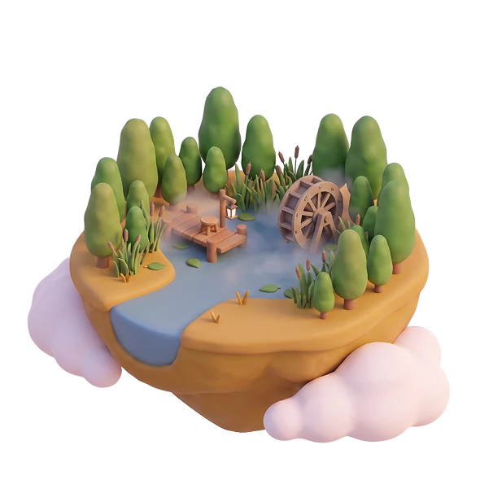
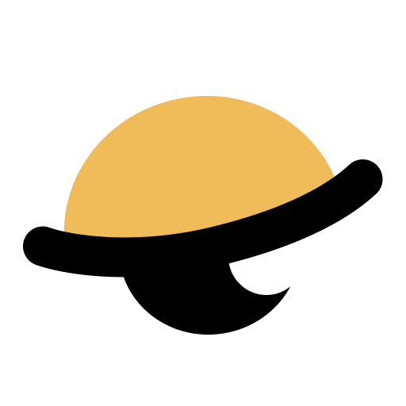
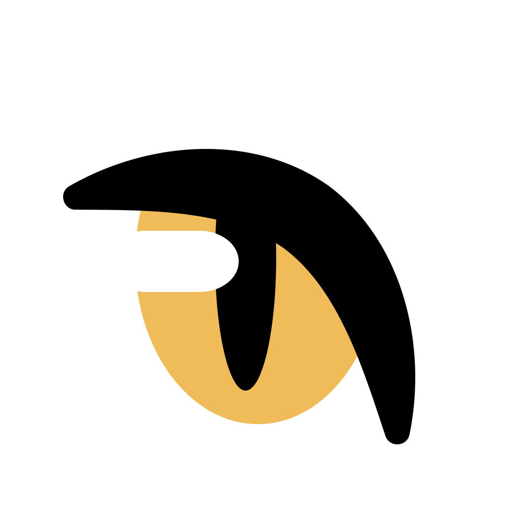

Lagos y colección
Pesca
Desde el cuarto, tu Yunipet puede elegir una isla, lanzar la caña y descubrir qué pez picó. Cada captura tiene su propia ficha en la colección.
Las islas de pesca
El diseño contempla 123 especies repartidas entre ocho destinos. Elige una isla para ver qué ambiente tiene y cuántas especies de cada rareza podrás descubrir.

La primera lección de pesca transcurre junto a un viejo molino. Entre los juncos y el agua tranquila de la tarde, es más fácil encontrar peces comunes.
15 especies previstas
- Comunes
- 9
- Raras
- 4
- Míticas
- 2
- Legendarias
- 0
Los peces del álbum
Cada isla lleva su propia lista de descubrimientos. Una silueta ocupa el lugar de cada especie pendiente. Al capturarla, puedes reconocerla por su ilustración y consultar su rareza y su rango de peso.

30 estudios de peces
Estos peces muestran el estilo visual del álbum. Sus diseños y nombres son provisionales. Elige una miniatura para verla en detalle.
Ver el avance de agosto →Los ojos de los Yunipets
Los peces comparten el estilo de ojos de los Yunipets. En el primer ejemplo, el párpado inclinado deja la mirada entrecerrada. En el segundo, la pupila vertical destaca sobre el iris dorado.


Cómo funciona
Escoger un lago
El Molino introduce la pesca con nueve especies comunes y sin legendarios. Las tablas de especies cambian en destinos como Los Álamos y Las Garzas.
Lanzar y recoger
Con el flotador en el agua, el indicador circular marca el momento de recoger el sedal. En el video se ven dos capturas y las recompensas que se revelan después de cada una.
Examinar una captura
Al elegir un pez en la colección aparecen su ilustración, rareza, descripción, longitud y peso. La ficha del pez acorazado también muestra cuánto se recibiría al vender ese ejemplar.
El diseño del álbum contempla consultar las capturas por lago o rareza y marcar ejemplares favoritos.